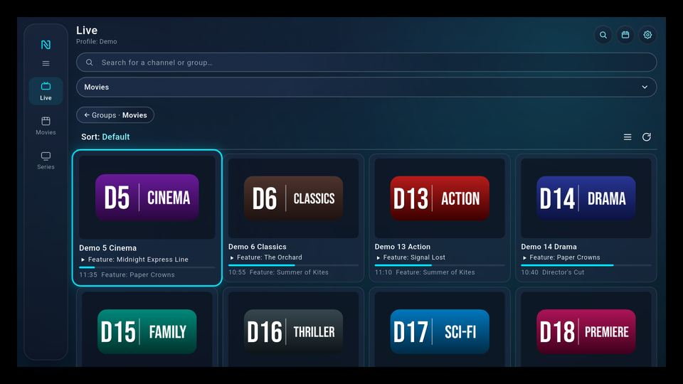

NitaTVOdtwarzacz IPTV na Android TV, tablet i telefon
NitaTV odtwarza strumienie dostawcy, u którego Ty masz subskrypcję, lub Twoją playlistę M3U: telewizję na żywo z programem TV, nagrywanie, filmy i seriale.
Miesiąc okresu próbnego za darmo, bez karty płatniczej.

Telewizja na żywo 
Program TV 
Filmy i seriale 
Strona filmu 
Dźwięk i napisy 
Planowanie nagrania 
Na telefonie
Zrzuty ekranu pokazują źródło demonstracyjne: wszystkie nazwy, obrazy i program TV są fikcyjne.
Film demonstracyjny: „Sintel” © Blender Foundation, CC BY 3.0 (durian.blender.org).
⚠ NitaTV nie dostarcza żadnych kanałów, filmów ani innych treści oraz nie sprzedaje ani nie poleca żadnego dostawcy. Potrzebujesz własnej subskrypcji u dostawcy lub playlisty.
Co robi NitaTV
- Logowanie linkiem do playlisty M3U lub danymi logowania od dostawcy
- Dodaj swoją playlistę z telefonu, skanując kod QR
- Telewizja na żywo z programem TV
- Filmy i seriale z wznawianiem od miejsca, w którym przerwano oglądanie
- Nagrywanie audycji od razu lub z zaplanowaniem w programie TV
- Pobieranie filmów i odcinków do oglądania offline
- Przesyłanie na urządzenie Chromecast
- Wybór ścieżki dźwiękowej i napisów
- Kilka profili, ulubione i wyszukiwanie
- Obraz w obrazie
- Dostępna w 21 językach
Najczęstsze pytania
Czy NitaTV dostarcza kanały?
Nie. NitaTV to odtwarzacz: odtwarza to, co dostarcza Ci Twój dostawca. Nie zawiera żadnych kanałów i nie poleca żadnego dostawcy.
Czego potrzebuję?
Linku do playlisty M3U lub danych logowania otrzymanych od dostawcy. Możesz wpisać je na telewizorze albo wysłać z telefonu, skanując kod QR.
Na jakich urządzeniach?
Android TV i Google TV, tablety i telefony z Androidem. Z telefonu lub tabletu możesz też przesyłać obraz na Chromecasta.
Ile to kosztuje?
Miesiąc okresu próbnego za darmo, bez karty płatniczej, jeden na konto Google. Potem subskrypcja roczna, którą możesz anulować w dowolnej chwili w Google Play.
Co dzieje się z moimi danymi logowania?
Twoje dane logowania pozostają na Twoim urządzeniu, w zaszyfrowanym sejfie. Wysłane z telefonu kodem QR, są szyfrowane end-to-end: nasz serwer nie może ich odczytać. NitaTV nie zawiera reklam ani modułów śledzących.